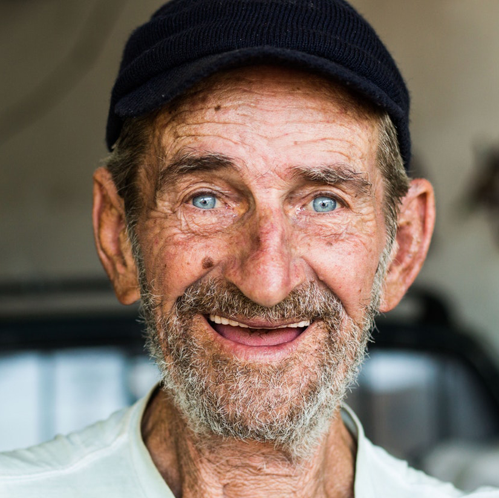

User Personas
Throughout my research interviews have become such a crucial part of my process. Creating User personas of those interviews allows me to empathize with the user and find solutions that would benefit their needs. User Personas also allow me to show others exactly who I am designing for and why I am making the choices that I am.
Robert
Robert is an 82 year old veteran and a retired EMT. With strong family and the community ties, he wishes to stay in contact with those around him. When Robert is not home, you can find him socializing with other townsfolk in the local diner.
"When you try to pick friends, it's hard to figure out if they are really who they say they are."
Demographics
- Age: 82
- Gender: Male
- Marital Status: Married
- Occupation: Retired
Goals
- To reconect with old friends
- Stay in touch with family
- Stay up to date on town news
Pain Points
- The friending process
- Lack of direction (knowing what to do)
- Lack of perceived safety

Martha
Martha is an 82 year old school bus drivier. She is extremly active in her children and grandchildren’s lives. When she is not babysitting, she is driving her friends around to doctor’s appointments and various other obligations.
"I hope my kids arn’t putting their dirty laundry out on Facebook again."
Demographics
- Age: 82
- Gender: Female
- Marital Status: Married
- Occupation: Retired
Goals
- To stay in touch with friends
- To see what her daughter in Texas is up to
- To view and share photos of her grandkids
Pain Points
- Not having much experience with technology
- Perception of Facebook as a place to “air out your dirty laundry”
- Loss of hearing
Henry
Henry is a 67-year-old science teacher at a small high school. When not teaching he is coaching a rec baseball team. Henry would love to use Facebook stay in touch with past students and players.
"I really want an easy way to get information to the parents and players on my team."
Demographics
- Age: 67
- Gender: Male
- Marital Status: Widowed
- Occupation: Teacher
Goals
- To stay in touch with past students
- To friend fellow teachers & admin
- Disseminate game & practice info to players and parents
Pain Points
- Privacy - wanting to stay in contact with students but not wanting them to know everything.
- Maintaining a separate page from his personal page.
- Does not want to spend alot of time updating Facebook but needs to get information out.
Chris & Morgan
Chris is a 61-year-old construction worker. Morgan is a 63-year-old executive assistant. Together they share a facebook account to stay in touch with family and friends.
"Sharing an account makes things easier to manage. "
Demographics
- Age: 61 / 63
- Gender: Male / Female
- Marital Status: Married
- Occupation: Construction / Administrative Assistant
Goals
- Stay in touch with family & friends
- Eliminate the need for duplicate interactions
- Share life events
Pain Points
- Differentiating who posted what
- Maintaining mutual friends
- Facebook policy does not support this type of account